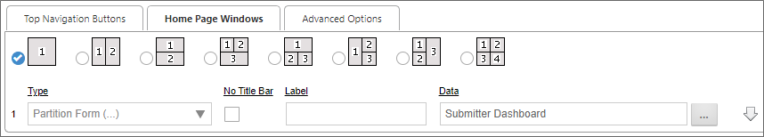
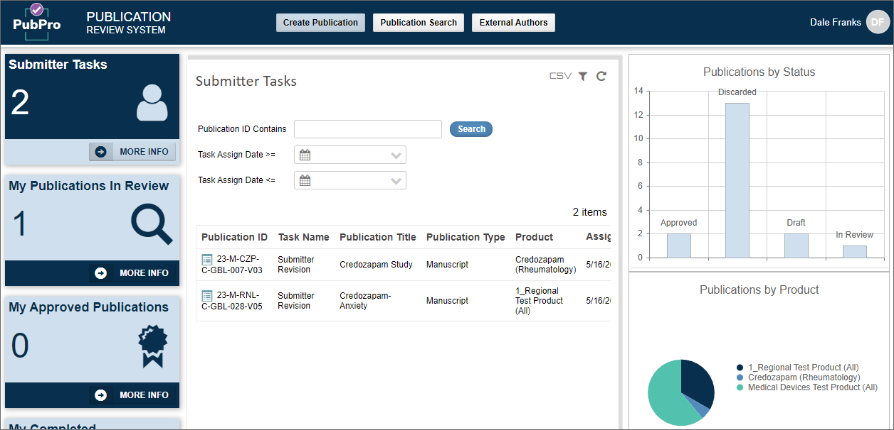
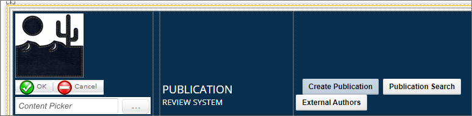
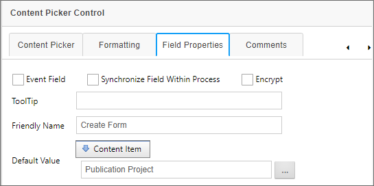
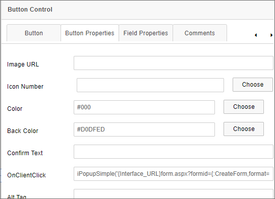

Process Director uses some JavaScript APIs to perform operations to manipulate Form data, or to Open Forms in special circumstances as described below.
Process Director enables you to get or set Form Field values through JavaScript. Using the JavaScript API enables you to use the appropriate JavaScript Input field attributes for the field type you wish to set. For instance, the value of a text box can be set using the ".value" attribute, while the value of a checkbox can be set using the "checked" attribute.
When using JavaScript, you can get or set the value of a field using the following syntax:
CurrentForm.FormControls["FieldName"].valueattribute
// Set the Value of a Text Box
CurrentForm.FormControls["Text1"].value = "MyValue";
//Get the value of a text boxvar myValue = CurrentForm.FormControls["Text1"].value;
// Set the value of a checkbox
CurrentForm.FormControls["Checkbox1"].checked = true;
// Get the Value of a checkboxvar myValue = CurrentForm.FormControls["Checkbox1"].checked;
JavaScript can be used directly on the Form by inserting an HTML control on the Form and erasing the Name property of the HTML control.
When creating a Workspace for a new application, it's possible to display a Process Director form as the primary portlet for the Workspace. You might wish to do this when you want the workspace to have a highly customized display and layout, rather than displaying the standard Knowledge Views/Task List in the standard workspace portlets. Using a Form in this manner enables you to design a workspace with custom colors, object locations, branding, etc.
There is one drawback to this method of UI design, in that Forms do not call other forms directly in Process Director. In most cases, the purpose of a Form is to collect data about a specific process instance, which can be submitted and used to view/update the data used in the process instance. This Form usage assumes that the primary form will not call additional Forms and, if additional forms are needed, they can be added to the Process Timeline via the Form Actions Timeline Activity. Indeed one can switch back and forth between Forms using this Timeline Activity type.
Using a Form as the primary dashboard UI for a Workspace, therefore, represents a unique challenge, in that you will probably want users to have the ability to open Forms, Knowledge Views, or other objects, which is a capability that forms don't have. To enable this feature, a JavaScript command, iPopupSimple, enables you to configure a Form button to open a new object instance in a popup window directly from the Form. This JavaScript command takes a single parameter, which is the URL of the Process Director object you wish to open, e.g.:
iPopupSimple('URLToOpen');
This command is conceptually very simple, but using it in an integration, especially when you'd like to use different buttons to open different Process Director objects, adds a fair amount of complexity. Since that's so, let's take a look at how to implement iPopupSimple using an implementation example.
First, the Workspace for our sample application is set to use a single portlet for the workspace that displays the Form we wish to use as the Workspace Dashboard.

In this example, the Submitter Dashboard is a Process Director Form that will display the application UI. When displayed to the end user, it will look like this:

All of the objects the user sees are designed into the Form. There are several buttons on this form, so for the purposes of this example, let's concentrate solely on the CreatePub button at the top of the Form, which is labeled Create Publication. This button must, when clicked, open a new Form that the user can fill out and submit. Let's take a close look at top portion of the Submitter Dashboard Form in the Online Form Designer.

In addition to the CreatePub button, there's also a Content Picker control on the left side of the page, named CreateForm. The CreateForm control enables us to specify the Form we want to open when the CreatePub button is clicked. We do this by setting the Default Value property of the CreateForm control to a Content Item, and choosing the Publication Project Form as the Content Item.

We'll use the value of the CreateForm control to help construct the URL we need to call with the iPopupSimple command.
The CreatePub button is a simple Button control. In this case, since we'll be using it to call the iPopupSimple JavaScript command, we'll use its OnClientClick property to call iPopupSimple by placing the command in that property box.

Normally, clicking a Button control prompts a reload of the Form to perform some sort of server-side action. We don't want to do that in this case, so we're using the OnClientClick property to capture the button click event on the client side, which is to say, in the browser, rather than prompting a server-side event.
The full syntax of the iPopupSimple command we're using is:
iPopupSimple('{Interface_URL}form.aspx?formid={:CreateForm,format=ID}');
To shorten the URL we need to provide, the JavaScript URL parameter we're passing uses two system variables. INTERFACE_URL provides the base URL of our Process Director Installation, ending in a forward slash, e.g., HTTPS://publications.bplogix.com/. The Form System Variable for the CreateForm Content Picker is formatted to return the FormID of the Form we want to open as a new instance. At run-time, this configuration ensures that, when the CreatePub button is clicked, the Publication Project Form is opened in a new popup window, just as Forms normally open in Process Director.
Technically, we don't need to use either of these two system variables to construct the URL parameter that we're passing to iPopupSimple. We could simply hard-code the Form URL into the command. But, that would require typing a long, complex URL into the OnClientClick property box. Moreover, should we need to change the Form we want to open with this button, such as after an update to the application, we'd need to come back and re-type a different (long and complex) URL again. With this configuration, if we need to change the Form we want to open, we just have to change the Default Value of the CreateForm Content Picker to a different Form to update the URL parameter automatically.
In this example, we've only discussed opening a Form instance, but using the same process, we can also open Knowledge Views, Charts, or other Content List objects as well. All we need to do is provide the appropriate Content Picker and Button controls, and configure the onClientClick property for each of the buttons we need.